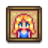
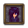
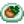
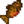
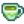
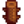

Carro Ambulante
| Carro Ambulante | |
 | |
 | |
| Horario de apertura: | De 6:00 a 20:00 Viernes y Domingo 17:00 a 02:00 durante el Mercado nocturno |
| Cerrado: | Lunes a Jueves, Sábado |
| Dirección: | Bosque Tizón |
| Residentes: | |
El Carro Ambulante es una tienda que aparece al sur de La granja en el Bosque Tizón los Viernes y Domingos, cerrando a las 20:00. También aparece todos los días del Mercado nocturno (15-17 de Invierno) y cada día del Festival del Desierto (Primavera 15-17). Las existencias cambian cada día que aparece el Comerciante Ambulante. El mercader venderá una selección de diez artículos al azar en cantidades limitadas (1 o 5 de cada uno) como "inventario estándar", además de un mueble en cada momento. También puede haber un artículo adicional de "inventario especial" a la venta.
Los precios del Carro Ambulante pueden variar de una visita a otra. Los precios suelen estar bastante elevados, pero de vez en cuando un artículo puede venderse por menos de su precio normal. Tenga en cuenta que a veces hay artículos a la venta fuera de sus estaciones normales, lo que puede ser útil para completar lotes.
El carro es conducido por un cerdo con fez y gafas. Al interactuar con el cerdo, éste le gruñirá al jugador. Si mantienes pulsado el botón derecho del ratón, el cerdo gruñirá repetidamente, pareciendo una canción. Durante el Mercado nocturno, el cerdo flota a un lado del carro en un flotador.
Inventario especial
Tenga en cuenta que los Granos de café y las Semillas raras pueden venderse también como inventario estándar en cualquier estación.
| Artículo | Precio por unidad | Estación | Observaciones | |
|---|---|---|---|---|
| Semilla rara | 100% de probabilidad de aparecer 10% de probabilidad de que sean 5 unidades; 90% de que sea 1 unidad. | |||
| Espantapájaros Raro (4 de 8) | 40% de probabilidad de aparecer. | |||
| Grano de café | 25% de probabilidad de aparecer. | |||
| Fez Rojo | 10% de posibilidades de aparecer. | |||
| Catálogo de muebles Joja | 10% de probabilidad de aparecer si se han completado los Lotes del Centro Comunitario. | |||
| Catálogo junimo | 10% de probabilidad de aparecer si se si se han completado los Lotes del Centro Comunitario o el Formulario de proyectos de desarrollo comunitario de Joja. | |||
| Catálogo retro | 10% de probabilidad de aparecer. | |||
| Juego de té | 5% de probabilidad de aparecer a partir del año 25.[1] | |||
| Almanaque de Stardew Valley | 5% de probabilidad de que aparezca uno de los cinco libros de habilidades. | |||
| Cebo y Corcho | ||||
| Semanal del leñador | ||||
| Mensual Minero | ||||
| Trimestral de Combate | ||||
| Receta de Anillo de pedida | Todas | Multijugador: 100% de probabilidad de aparecer (hasta comprarlo). Un Jugador: No aparece. | ||
Retratos de cónyuges
Una vez que un aldeano se convierte en su cónyuge, o Krobus se convierte en su compañero de cuarto, su retrato estará disponible. Aparecerá cada vez que el carro ambulante te visite, siempre y cuando tengas 14 corazones con tu cónyuge/compañero de cuarto en ese momento. Estos retratos tienen un precio fijo de  30 000o.
30 000o.
| Retratos de cónyuge/compañero de cuarto | ||
|---|---|---|
|  Retrato de Haley | ||
|  Retrato de Sebastian | ||
Inventario estándar
Los articulos no mostrados no se venden en el Carro Ambulante. Los articulos Vendidos en el Carro Ambulante son siempre de calidad normal, nunca plata, oro, o iridio.
Platos cocinados
| Articulo | Precio |
|---|---|
|  Sorpresa de carpa | |
Cultivos y Recolección
| Articulo | Precio |
|---|---|
Semillas y Fertilizantes
Pescados y Recolección en la playa
| Articulo | Precio |
|---|---|
|  Trucha tigre | |
Productos artesanales
| Articulo | Precio |
|---|---|
|  Té verde | |
Productos de Animales
| Articulo | Price |
|---|---|
Fabricación
| Articulo | Precio |
|---|---|
|  Valla de madera | |
Recursos
| Articulo | Precio |
|---|---|
Misceláneos.
| Articulo | Precio |
|---|---|
Cebo y Aparejos
| Articulo | Precio |
|---|---|
Botín de monstruo
| Articulo | Precio |
|---|---|
Muebles
Cada uno de los Muebles que se muestran a continuación tiene la misma probabilidad de aparecer en el inventario del Carro Ambulante (1/146 o 0,68%). El precio de cada uno oscilará entre  250 – 2.500o.
250 – 2.500o.
Los muebles que no aparecen en la lista no se venden en el Carro Ambulante.
Sillas, Bancos, y Sofás
Mesas
Plantas de interior
Cuadros y Tapices
Otros muebles
Lombarda garantizada
Si la opción avanzada Finalizable en 1 año garantizado se habilitó al crear el guardado, se garantiza que el carrito de viaje se venderá Semillas de lombarda al menos una vez en el primer año, entre la primavera 7 en el Bosque Tizón (la segunda visita del carro) y invierno 16 en el Mercado nocturno (la 30a visita del carro). El día se selecciona al azar cuando se crea el guardado. La garantía solo se aplica en ese solo día, incluso si el jugador no revisa el carrito ni compra las semillas ese día.[2]
Links externos
Los jugadores con acceso a sus archivos de partidas guardadas pueden encontrar útil la utilidad "Stardew Predictor" para predecir qué objetos ofrecerá el Carro Ambulante cada semana, y durante el Mercado nocturno. La utilidad (en inglés) se encuentra en https://mouseypounds.github.io/stardew-predictor/.
Errores
- En la versión del juego para Android e iOS, después de comprar algo del carro y cerrar y volver a abrir el menú de la tienda, se puede volver a comprar el objeto. Esto se puede repetir indefinidamente.
Referencias
- ↑ Ver Content\Data\Shops.xnb. En la sección de Trader's, la Condición para que aparezca el juego de té es "YEAR 25, SYNCED_RANDOM day teaset .05".
- ↑ El código del juego se inicializa Game1.netWorldState.Value.VisitsUntilY1Guarantee en Game1::loadForNewDay, luego lo decrementa por cada visita del carro ambulante. Las semillas de lombarda están garantizadas cuando el valor alcanza cero, después de lo cual se disminuye a -1 y ya no se aplica.
Historial
- 1.0: Introducido.
- 1.1: Añadido Grano de café para comprar.
- 1.3.27: Ahora el Carro Ambulante se presenta en el Mercado nocturno.
- 1.4: Los artículos duplicados fueron removidos. La Baya de gema dulce, Huevo sombrío, Mayonesa sombría fueron removido del inventario estándar. Se agregaron nuevo artículos al inventario estándar: suelo de ladrillo, Caviar, Platija, Té verde, Carpa de medianoche, Brote de arroz, Budín de espuma de mar, Cóctel de gambas, Arbolito de té, Café con triple de expreso, Arroz sin moler.
- 1.5: Añadida la Alfombra oceánica como posible mueble en el inventario.
- 1.6: Aparición añadida en el Festival del Desierto. Retratos de cónyuges, Catálogo de muebles Joja, Catálogo Junimo, Catálogo Retro, Juego de té, y libros de habilidades agregados al Inventario especial.
- 1.6.3: Las Semillas milenarias ya no se venden. Añadido retrato de Krobus.